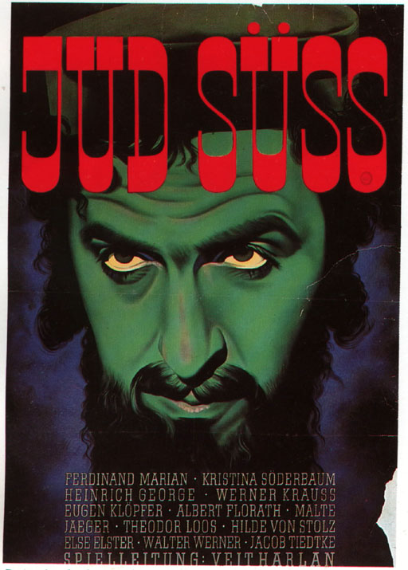
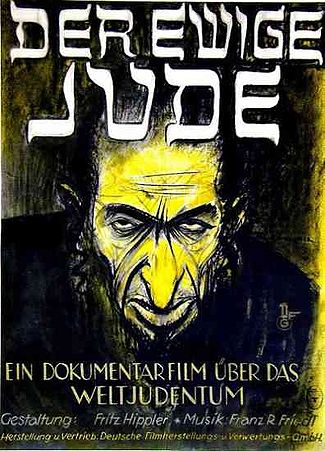
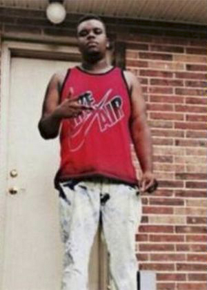

1
1.1 Inleiding
Voor bijna iedereen is dit een onderdeel van zijn of haar ochtendritueel. Het nieuws. Zo ook voor mij, minimaal twee keer per dag kijk ik het en als het even kan veel meer. Ik ben gefascineerd door de constante stroom aan informatie die op me af komt uit alle hoeken van de wereld. Een relletje hier, een epidemie daar en dat alles vanuit mijn eigen luie stoel. Af en toe lijkt het wel alsof ik naar een film zit te kijken. Misschien is dit juist ook wel waarom ik zo vaak naar het nieuws kijk. In de hoop dat ik even niet aan mijn eigen leven hoef te denken, als er bijvoorbeeld iets ergs gebeurd is. Zodra ik iets dergelijks lees ga ik meteen relativeren en krijg ik meteen het gevoel dat alles in mijn leven toch niet zo erg lijkt als het is. Er zijn altijd mensen die het zwaarder hebben.
Bijvoorbeeld de mensen die in Syrië en Irak leven, waarvan afgelopen zomer op willekeurige momenten beelden opdoken van IS-strijders die mensen bedreigen, gijzelen of op gruwelijke wijze executeren. Met veel angst en paniek werden deze nieuwsberichten, ook bij mijzelf, ontvangen. Door de beelden die mij getoond werden kreeg ik kippenvel, werd ik angstig en keurde ik deze groepering af. Ik keur elke vorm van geweld af. Ik ben niet gelovig, maar de zin waarmee ik me wel verbonden mee voel is 'Gij zult niet doden' uit de bijbel. Ongeveer twee maanden na de eerste berichten over IS hoor ik op het nieuws dat er een coalitie is gevormd wat grotendeels bestaat uit Westerse landen. De coalitie zal zich met militaire middelen gaan inzetten tegen de IS. Wat mij toch wel een gevoel van opluchting gaf. Echter begon ik nu mijzelf de vraag te stellen waarom ik de executies van IS afkeur maar de bombardementen van het Westen goedkeur.
Waarom zie ik IS als een barbaars volk en het Westen als helden? Ik geloof niet dat dit door mijn opvoeding of scholing komt. Er is nooit tegen mij gezegd: die mensen zijn slecht en die mensen zijn goed. Ik heb uiteraard een normen- en waardenpakket meegekregen, maar ik kan mij niet herinneren dat hier de definitie van barbaar en held bij inbegrepen zat. De media zou hier dus een grote rol in kunnen hebben gespeeld, de informatiebron die mij een kijk op de wereld levert.
Deze gedachte gaf mij enige stof tot nadenken, ik vind namelijk dat ikzelf niet snel beïnvloed word door de media, maar zodra er iets ergs gebeurt lijken we allemaal iets minder rationeel te kunnen denken en laten we plots ons gevoel spreken. En waarom zou ik het nieuws niet geloven? Zij doen zich voor als een onafhankelijk en objectief medium die mij de waarheden van de wereld laat zien. Hierbij moest ik ook aan mijzelf als grafisch ontwerper denken. Ik werk graag met actuele onderwerpen en hierin probeer ik altijd objectief te blijven, maar in principe heb ik de macht om te laten zien wat ik wil en in welke context dit geplaatst wordt, zonder dat ik mijzelf af hoef te vragen hoe dit door andere mensen opgevangen wordt. Het zou het dus goed mogelijk kunnen zijn dat ik mij onbewust heb laten beïnvloeden bij het creëren van beelden door nieuwsmedia, met name het creëren van slechte beelden.
Waardoor ik op mijn onderzoeksvraag van mijn scriptie kom: hoe creëren de media een barbaar?
Het gaat hier dan voornamelijk over nieuwsmedia. Ik verwacht dat het onderwerp nieuwsmedia alleen al vrij ingewikkeld wordt, vandaar dat ik mij niet stort op de media in het algemeen, dat zou voor mij een veel te breed onderwerp worden.
Maar om de vraag te beantwoorden heb ik de twee belangrijkste elementen uit de vraag onderzocht. De barbaar en de media. Beide worden in een apart hoofdstuk behandeld. Hierbij kijk in naar de geschiedenis van de onderwerpen en wat voor invloed het op ons mensen heeft. In het derde hoofdstuk zal ik aan de hand van een aantal voorbeelden de relatie tussen de twee onderwerpen late zien.
2 De barbaar
2.1 De ontwikkeling van de barbaar
Het woord ‘barbaar’ ontstond lang geleden en was toen nog vrij onschuldig. Bijna drieduizend jaar terug noemden de Grieken, en in navolging van hen de Romeinen, iemand een barbaar als die persoon niet dezelfde taal sprak, ofwel onverstaanbaar was. Het gebrabbel klonk in de oren van de Griek als ‘bar-bar-bar’ waardoor je ‘Barbaros’ werd genoemd als je de Griekse taal niet beheerste. Het was een onomatopee (klanknabootsing) van de vreemdeling die alleen maar wees op een taalverschil.
Maar mensen die raar praatten werden al snel gezien als onbeschaafd en- of onderontwikkeld. Door het bergachtige terrein was het Griekenland van de vijfde eeuw voor Christus, politiek erg verdeeld. Elke stad, met het er direct omheen liggende land, was een zelfstandige staat, ofwel een stadstaat. Bekende stadstaten waren Athene, Sparta, Korinthe en Thebe. Door de gunstige ligging van de haven van Athene, in een drukke vaarroute, bevorderde de handel. Hierdoor werd Athene zeer welvarend.
Toen Athene besloot Griekse afstammelingen in Klein Azië (het huidige Turkije) te helpen in hun opstand tegen de Perzische koning, escaleerde dit tot de Perzische oorlogen. Dit zorgde ervoor dat de verschillende Griekse stadstaten een eenheid vormden. De Griekse beschaving werd ten slotte bedreigd door de barbaren uit het Oosten. Hierdoor wees het woord barbaar in Griekenland niet alleen meer op een taalbarrière, maar ook op een verschil in beschaving, ideologie en soms zelfs een verschil in ras. Het woord werd overgenomen door het wij-zij denken. De barbaar kwam terecht in een fictieve tegenstelling, waarin het altijd de badguy moest zijn. Beschaving versus barbaars.
In het gedicht ‘In afwachting van de barbaren’1, van de Griekse dichter Konstantínos Kaváfis (1863 – 1933), vraagt hij zich af; wie wij zijn zonder de barbaren. In dit gedicht herhaalt de ene spreker steeds dat de barbaren komen. Normaal sterkt herhaling een bewering in kracht aan, alleen hier werkt het averechts. De spreker klinkt op het einde als een soort papegaai, waardoor de herhaling een betekenisloos geluid wordt. Kaváfis vraagt zich af of die barbaren een verzinsel zijn die ons helpen te vertellen wie we zijn. Op het moment dat de barbaren er niet blijken te zijn, dan is het andere deel van de tegenstelling, namelijk de beschaving, meteen in gevaar. De barbaren komen niet... Wat nu? Nu moeten de burgers zelf met oplossingen komen.
*Waar wachten wij op, bijeengekomen op de agora?
Op de barbaren die vandaag komen.
Waarom wordt in de Senaat niets gedaan?
Zitten de Senatoren daar zonder wetten te maken?
Omdat de barbaren vandaag zullen komen.
Waarom zouden de Senatoren dan nog wetgeven?
Dat zullen de barbaren doen wanneer ze zijn gekomen.
Waarom is onze keizer zo vroeg opgestaan
en zit hij bij de grootste poort van de stad
plechtig op zijn troon, de kroon op ‘t hoofd?
Omdat de barbaren vandaag zullen komen.
De keizer wacht om hun aanvoerder te ontvangen
en houdt zelfs een oorkonde klaar
die hij hem geven wil. Daarop schreef hij
veel titels, erenamen voor hem neer.
Waarom verschenen onze twee consuls vandaag
en de praetoren in hun rode, geborduurde toga’s;
waarom dragen ze armbanden met al die amethisten
en ringen met prachtige, vonkende smaragden;
waarom torsen ze vandaag kostbare staven
met zilver en goud fraai geciseleerd?
Omdat de barbaren vandaag zullen komen en
zulke dingen verblinden de barbaren.
Waarom komen ook niet als altijd de waardige rhetoren
om redevoeringen te houden, om het hunne te zeggen?
Omdat de barbaren vandaag zullen komen,
hun mishaagt woordomhaal, welsprekendheid.
Waarom begint er nu opeens die onrust
en die verwarring (Wat werden de gezichten ernstig).
Waarom lopen snel straten en pleinen leeg,
en keert ieder naar huis, verzonken in gedachten?
Omdat de nacht viel en de barbaren niet kwamen.
Enkele lieden, net binnen uit de grensstreek,
zeiden dat er geen barbaren meer zijn.
Wat moet er nu van ons worden, zonder barbaren.
Die mensen waren tenminste een oplossing.
2.2 Angst
Maar waarom hebben we de barbaren zo hard nodig? Dit heeft simpelweg met angst te maken. Kijkend naar Nederland, wilde het kabinet in 2013 een participatiesamenleving invoeren. Ofwel: voor jezelf en de ander verantwoordelijkheid nemen, in goede en slechte tijden, ongeacht huidskleur, accent, leeftijd of sekse. Dit lijkt een ideale manier om met elkaar om te gaan binnen de samenleving, maar in de praktijk bleek deze verbroedering zich in een totaal andere vorm dan verwacht te uiten. De keren dat we ons Nederlanders verbonden voelden, ontstond zelden uit oprechte naastenliefde. Veel belangrijker is namelijk het hebben van een gezamenlijke vijand.
Alhoewel Nederland niet een directe vijand heeft, verhoogde de Nationale Coördinator Terrorismebestrijding en Veiligheid1 in maart van 2013 het dreigingsniveau van ‘beperkt’ naar ‘substantieel’. Dit betekende dat de kans op een aanslag tegen Nederland reëel werd. Hierbij gaat de Nederlandse regering er vanuit dat er jihadistische2 bewegingen in het Westen en daarmee ook in Nederland zijn. Deze ontwikkelingen bevestigen de noodzaak om als Nederlandse overheid alles in werking te stellen om aanslagen te voorkomen en tegen te gaan. Om zo onze open samenleving en democratie te beschermen. Aanslagen op militairen en politieagenten in Canada en de VS, het verhinderen van complotten in diverse westerse landen en de trends van radicalisering en uitreis naar Syrië en Irak,
bevestigen de gevaren.Je kan de dreigingen vanuit het Midden-Oosten vergelijken met de dreiging die de Grieken van de Perzen hadden, de stadstaten gingen samenwerken om de dreiging te remmen. Waar de Grieken de Perzen als barbaren zagen, zien wij de terroristen nu als barbaren. Door deze mensen als barbaren te zien komen we weer terug op het wij-zij denken wat ook de Grieken deden. Namelijk wij, de beschaving, versus zij, de barbaren. De anderen zijn barbaren, dus we hoeven we niet te respecteren, we hoeven hun standpunten niet proberen te begrijpen. Die manier van denken helpt de Westerse overheden de strijd tegen de Islamitische Staat te verantwoorden. Oorlog tegen de barbaren.
Door de stempel van barbaar op de IS, willen we en begrijpen we hun standpunten niet. Dit boezemt angst in bij de Westerse bevolking. Maar angst speelt de terroristen in de kaart, want dat is uiteindelijk hun doel: de samenleving overhoop halen. De Islamitische Staat heeft de online-jihad naar een nieuw niveau gebracht. Terreurorganisaties hebben de laatste jaren hun activiteit verplaatst naar sociale media omdat veiligheidsdiensten hun websites gemakkelijk platlegden. Twitter, YouTube en Facebook zijn bovendien eenvoudig te gebruiken. IS bereikt zo veel sneller een veel groter publiek. In het Westen is het gebruik van sociale media zo ingeburgerd, dat de impact veel groter is.
2.3 Wij-zij denken
Voor het wij-zij denken is het woord zondebok een goed voorbeeld. Het woord is waarschijnlijk het meest bekend in zijn figuurlijke betekenis van de onschuldige die voor andermans problemen opdraait en/of waar anderen zich op afreageren. In de Van Dale, het standaardwoordenboek van het Nederlands, staat bij zondebok: 'bok die de woestijn werd ingejaagd, nadat hij met de ongerechtigheden van het volk was beladen.' en: 'persoon op wie anderen hun schuld werpen, of die het gestadig voorwerp van hun plagerijen en beschimpingen is: hij is altijd de zondebok van het gezelschap.'
The Oxford English Dictionary geeft bijna dezelfde omschrijving van het Engelse woord voor zondebok: scapegoat, maar vermeldt naast de bok die de woestijn in werd gezonden, op een tweede die werd aangewezen om geofferd te worden. De omschrijving van het van scapegoat afgeleide woord scapegoating1 is interessant, omdat het aangeeft dat de zondebok haast vanzelfsprekend de zwakkere is.
René Girard, oorspronkelijk historicus maar tegenwoordig hoogleraar Franse taal, letterkunde en cultuur in Californië, heeft het woord zondebokmechanisme bedacht. Het zondebokmechanisme komt in het kort hierop neer: mensen hebben de neiging elkaar te imiteren en dus ook dezelfde dingen te begeren. Maar omdat mensen ook op een bepaalde manier uniek willen zijn brengt dit tegelijkertijd afgunst en strijd waardoor op een gegeven moment in een samenleving een situatie van wanorde en onduidelijkheid ontstaat. Mensen weten niet meer waar ze aan toe zijn en schuiven de schuld van de chaos die is ontstaan af op een zondebok en willen dat deze vervolgd wordt. De zondebok kan een eenling zijn maar ook een groep. Ook al is hij onschuldig, hij is dat in de ogen van de vervolgers niet. Meestal heeft de samenleving even de tijd nodig om deze zondebok te verwerken en tot de conclusie te komen dat deze onschuldig is. Wanneer de orde zich vervolgens herstelt, brengt men de zondebok en het ordeherstel met elkaar in verband en komt men tot de conclusie dat de herstellende orde te danken is aan de zondebok. Hierdoor wordt de zondebok heilig en men gaat over tot zijn verering. Wanneer echter na verloop van tijd weer een situatie van chaos ontstaat herinnert men zich hoe de vorige keer de orde hersteld werd en wordt opnieuw tot vervolging van een zondebok overgegaan.
Deze zondebok zoeken we altijd bij de ander. De ander kan voor de één iemand buiten zichzelf zijn, terwijl het voor de ander de vreemde of onbekende is. Degene die anders is of degene die uit een andere streek of ander land komt. De ander wordt door iemand of een groep als anders vastgesteld zonder dat hij hiervoor kiest.
Als we kijken naar de rechten van de mens gaan we er vanuit dat de mensen in principe aan elkaar gelijk zijn. Zo luidt ook het eerste artikel van de Nederlandse grondwet: 'Allen die zich in Nederland bevinden, worden in gelijke gevallen gelijk behandeld. Discriminatie wegens godsdienst, levensovertuiging, politieke gezindheid, ras, geslacht of op welke grond dan ook, is niet toegestaan. Hierdoor staat de één niet boven de ander. Hierbij gaan we er dus vanuit dat alle culturen gelijk staan aan de andere'.
Maar waarom laten we artikel 1 los als we ons over de Nederlandse grens bevinden. Het wij-zij denken hebben we allemaal wel eens meegemaakt, bijvoorbeeld als we op vakantie zijn. We vergelijken meteen onze vakantiebestemming met thuis. Hoe fijn de vakantie ook is, we zijn allemaal weer blij als we in ons eigen bed liggen, want die ligt toch net wat beter dan die van hun, of we onder onze eigen douche staan, want die heeft een toch net wat lekkerdere straal dan die van hun, daar in het buitenland.
Deze manier van denken zorgt ervoor dat wij ons verheven voelen boven de ander. Ik heb het beter dan de ander. Wat een bepaald gevoel van superioriteit met zich meebrengt. Dit ligt in de aard van de mens. Als we bijvoorbeeld kijken naar hoe de Japanners in de negentiende eeuw een Nederlander omschreven, vertelden ze het volgende: 'de Nederlander is een grove, lompe onaangenaam ruikende barbaar met een grote neus en rood haar.' De Nederlanders zagen dat uiteraard heel anders want over en weer bekijken mensen elkaar met een dezelfde superieure blik. Pogingen om hier anders over na te denken worden tegengehouden door de koppige aanpak om de eigen wereld constant als de best mogelijke aller werelden te beschouwen.
3 De nieuwsmedia
3.1 Onze nieuwsgierigheid naar de wereld
Na een tussentijd, wat meestal niet langer is dan een nacht maar vaak veel korter, misschien 10 minuten of een kwartier, onderbreken we even alles wat we doen om te kijken of er nieuws is. We zetten ons leven even in de wacht om vervolgens een dosis informatie te ontvangen over alle belangrijke prestaties, rampen, misdaden, epidemieën en romantische verwikkelingen die de mensheid waar dan ook op aarde is overkomen, sinds de vorige keer dat we even keken. Nooit eerder was het nieuws zo toegankelijk als nu. Het nieuws kunnen we op elk willekeurig moment van de dag benaderen. We bekijken het nieuws even snel op onze smartphones of tablets, achter de pc, op de tv, in kranten en tijdschriften. Het nieuws is overal om ons heen en bepaalt in grote mate de manier waarop wij naar de wereld kijken.
Maar is deze nieuwsgierigheid naar de wereld een nieuw fenomeen? Nee, juist niet. Het verzamelen en doorvertellen van nieuws dat zich buiten ons eigen leven afspeelt, is zo oud als de mensheid zelf. We willen constant weten wat er buiten onze eigen “wereld” afspeelt. Die nieuwsgierigheid is een sociaal zintuig, die noodzakelijk is om als een sociaal wezen te functioneren. Door meer informatie tot ons te nemen kunnen we ons voorbereiden op anders onverwachte gebeurtenissen. Toch heeft het lang geduurd voordat zich uit de zogenaamde nieuwsverteller, wat toen iedereen was, een journalist ontwikkelde; een zo objectief mogelijke en waarheidsgetrouwe, regelmatige en beroepsmatige verzamelaar, brenger en analist van nieuwsfeiten en feitjes waar algemeen belang aan wordt gehecht.
Deze vormt zich pas aan het einde van de 16e eeuw en krijgt later ook een publieke functie. Zonder de journalist kan de parlementaire democratie niet werken. Alleen een van de staat onafhankelijk journalist kan de burgers feiten brengen waarmee deze kan kiezen uit de verschillende politiek-maatschappelijke richtingen. Ook is het zo dat zodra de journalisten ongecensureerde feiten van de overheid naar buiten brengt de macht van de overheid beperkt blijft en de democratie blijft bestaan. Hierdoor krijgen journalisten een publieke functie, door deze functie wordt de journalist zelf machtiger. Echter kan er bij gebrek aan concurrentie een te veel vertekend nieuws ontstaan. Hierdoor zijn in de loop van de tijd de eisen van de journalistiek aangepast: nieuwsberichten dienen zoveel als mogelijk vrij te zijn van elke mening of vooringenomenheid. Verbuigingen en vervoegingen dienen naar de achtergrond te worden gedrukt.
Altijd gaat het nieuws zowel om belangrijke en alledaagse zaken. Roddels over mensen trekken evenveel aandacht als belangrijk zakelijk nieuws. Het verschil tussen kwaliteitsnieuws en sensatie is letterlijk zo oud als de weg naar Rome. Hoe het nieuws wordt verzameld en samengesteld hangt erg af van de normen en waarden in de samenleving, hoe de regering eruitziet en met de technische mogelijkheden. Zo werd door de uitvinding van de drukpers de mogelijkheid om nieuws over te brengen enorm vergroot, de komst van radio en televisie en later het internet, de computer en smartphones leverden voor een normale sterveling een nauwelijks meer beheersbare stroom aan informatie op.
Waarom kijken we als individu toch steeds of er nog nieuws is? Ook hier speelt angst een rol. Als we maar even niet het nieuws kunnen bekijken worden we al onrustig. We weten hoe vaak er dingen kunnen misgaan en hoe snel. Van het één op het andere moment kan er een virus van een Afrikaanse vleermuis op een andere soort zijn overgegaan en de luchtroosters van een drukke Japanse forensentrein binnendringen, kunnen beleggers een run op de valuta bespoedigen en kan de zoveelste “normale” vader met geweld een einde maken aan het leven van zijn twee kinderen. In de directe omgeving kunnen we best een normaal en rustig leven lijden. We zitten in de huiskamer lekker ontspannen een boek te lezen, maar beseffen ons dat die rust niet overeenkomt met de chaotische en gewelddadige wereld die elke dag ons leven vormen. Ons besef dat een ramp altijd mogelijk is verklaart het lichte angstgevoel wat we soms krijgen als we op ons mobieltje op het laatste nieuws staan te wachten. Het linkt misschien terug naar de onrust die onze verre voorouders gevoeld moeten hebben in de kille dagen, toen ze zich afvroegen of de zon ooit weer op zou komen.
Toch geeft het slechte nieuws ons een soort van vreugde. Het nieuws, hoe verschrikkelijk het ook mag zijn en misschien juist als het op zijn engst is, kan als een verlichting komen in ons leven waarin we altijd met ons zelf bezig zijn. We zijn altijd maar aan het proberen om ons persoonlijk te ontwikkelen en de mensen die dicht om ons heen staat van onze ideeën te overtuigen. Als je naar het nieuws kijkt is het alsof je een schelp tegen je oor houdt en wordt overweldigd door het lawaai van de mensheid. Je kunt aan je eigen zorgen ontsnappen door omstandigheden van mensen te vinden die veel ernstiger en indringender zijn dan de problemen die je zelf op je bordje hebt gekregen en door deze grotere kwesties je eigen zorgen en twijfels te laten overstemmen. Een hongersnood, een overstroomde stad, een seriemoordenaar op vrije voeten, een regering die aftreedt, een econoom die groeiende armoede voorspelt; zulke externe opschudding is misschien wel precies wat we nodig hebben om tot rust te komen.
Zo kan je vandaag in het nieuws horen over een man die achter het stuur van zijn auto in slaap is gevallen, nadat hij de halve nacht was opgebleven om vreemd te gaan op internet, van een viaduct is afgereden, waardoor een gezin van vijf mensen om het leven is gekomen. Een ander bericht gaat over een studente, die na een feest werd vermist en vijf dagen later in stukken werd aangetroffen in de achterbak van een taxibusje. Een derde item gaat over een verhouding tussen een tennislerares en haar dertienjarige leerling. Deze gebeurtenissen, die overduidelijk laten zien hoe fout mensen zijn, tonen ons juist dat we een gezond verstand hebben en we ons niet druk hoeven te maken over wie we zijn. Dit geeft een opgelucht gevoel, dat ons eigen zo voorspelbare leven toch ergens goed voor is. Dat we ons niet hebben laten verleiden om een collega te vergiftigen of een familielid onder het terras te begraven, maar een gewoon (normaal) leven hebben en daar tevreden over kunnen zijn.
3.2 De intrede van de krant
Tijdens het Romeinse Rijk werd het mondeling vertellen van het nieuws aangevuld met het schrijven van nieuws. Doordat het alfabet ontwikkeld was en door de komst van het papier werd het mogelijk om nieuws op te schrijven en verspreiden. Dit droeg bij aan het lange bestaan van het Romeinse Rijk, langer dan die van de Grieken. De brieven werden vaak door professionele brievenschrijvers (scribae) geschreven en verspreidt onder een groot publiek. Alle mogelijke zaken werden er in behandeld zoals: politieke ontwikkelingen, belangrijke uitspraken, sportevenementen maar ook roddels en schandalen.
Na het uiteenvallen van het Romeinse Rijk raakte de schrijfkunst en daardoor ook het geschreven nieuws in verval. Pas in de vijftiende eeuw gaat men weer gebruik maken van geschreven nieuws, daardoor is de bron van informatie verspreiden weer terug. Het opzetten van een post-organisatie helpt daarbij. De handel nam toe en hierdoor ook de behoefte aan informatie. Er komen uitgebreide koeriers- en postdiensten. Vertegenwoordigers in andere streken worden correspondenten. Er verschijnen ook mensen die zich alleen bezighouden met het kopiëren en verspreiden van nieuws, dus niet met het verzamelen ervan. Ook mond tot mond informatie blijft vooralsnog een belangrijke nieuwsbron.
Halverwege de vijftiende eeuw werd de drukpers uitgevonden waardoor het nieuws een groter publiek kon bereiken en binnen een kortere tijd dan ooit. Alleen was een groot deel van de bevolking nog steeds analfabeet. Tevens leidde de drukpers, door slechte verbindingen tussen dorpen en steden, nog niet tot een massale verspreiding van de krant.
De overheden gingen zich met de inhoud van het nieuws bemoeien. De censuur ontstond, waardoor vooral het nieuws uit eigen land werd beheerst. In de vijftiende en zestiende eeuw werd de drukpers vooral gebruikt voor het drukken van overheidsrechten en pamfletten. Om dit wat meer amusementswaarde te geven werden er ook gedichten of ballades afgedrukt, die vervolgens door balladezangers aan het ongeletterde publiek werden rondverteld. Die pamfletten en ballades waren vaak onjuist en nationalistisch. Ze waren vaak gemaakt met het idee om sensationeel over te komen. Moord, doodslag en rampen overheersten het nieuws. Ook bevatte het veel roddels over privé-affaires. Dat verkocht in die tijd al goed.
Het duurde nog tot het begin van de zeventiende eeuw voordat er iets ontstond wat op de krant van vandaag leek. De krant onderscheidde zich van de andere drukwerken doordat het openbaar was, regelmatig werd gepubliceerd, een variatie aan artikelen bevatte die over de actualiteit ging en onder een eigen titel verscheen en dus niet uit naam van de overheid schreef. Hierdoor kreeg het een eigen identiteit. Het valt op dat bijna overal tegelijk in Europa gedrukte nieuwsbladen ontstaan. Maar het laat nog even op zich wachten voor het regelmatig uitgeven van de kranten en de journalistieke vormgeving gevormd wordt.
Een latere doorbraak in de media was de komst van de radio en later ook de televisie, fax en teletekst. De snelheid waarmee nieuws bij de mensen door kon dringen en het bereik namen enorm toe. De manier waarop het nieuws via de “nieuwe media” werd behandeld had weer enorme invloed op de kranten. Die werden veel bondiger en korter in hun artikelen. Een tweede effect was dat de kranten, meer dan vroeger, werden gedwongen zich te verdiepen in de feiten van gebeurtenissen. Want die konden zoveel sneller, maar ook oppervlakkiger, door de radio en tv worden verspreid. Een derde gevolg was dat de concurrentie toenam waardoor journalisten zich meer op nog niet volledige en misschien onechte gebeurtenissen richtten. Nieuws wordt flexibeler, waardoor het steeds meer een medium wordt waarmee je het proces kan volgen in plaats van dat je het volledige verhaal te zien krijgt.
De traditionele kranten worden één keer per dag uitgegeven, dit is de eindversie en daar kan niks meer aan veranderd worden, maar online nieuws, zoals we dat nu kennen, is nooit af. Het online nieuws is constant in beweging en kan altijd aangepast worden. Het project 'Zeitgeist' van Jonathan Puckey laat deze aanpassingen en veranderingen in online nieuws goed zien. In dit project vertaalt hij het constant in beweging blijvende nieuws terug naar het traditionele, de krant. Door verschillende veranderingen een bepaald ontwerp te geven, is goed te zien waar de veranderingen plaats vinden. Op fig. 1 is te zien hoe één artikel van Fox News1 in 24 uur constant wordt aangepast. 'The Quick Brown' is een digitale vertaling van dit project, de website wordt constant gevoed door het nieuws van Fox News en toont aan wat er in de berichten aangepast wordt.

Fig. 1
Naast de radio en tv (en tegenwoordig internet en smartphones) is printmedia blijven bestaan en zo is ook tot de dag van vandaag mondelinge communicatie een belangrijke nieuwsvoorziening gebleven. Er gaan altijd wel geruchten door het land die alleen maar van mond tot mond verspreid worden.
3.3 De invloed van de nieuwsmedia op mensen
Door de eeuwen heen heeft de journalistiek hetzelfde doel gehad, ook voordat er van journalistiek gesproken werd: de media geven de mensen informatie en uitleg van publieke zaken zodat zij serieuze kwesties kunnen volgen en erover kunnen praten. Daarnaast is de media belangrijk voor de alledaagse informatie zoals bijvoorbeeld wat het weer is voor de komende dagen, wat er in het theater of op de televisie komt en welke mensen er zijn overleden. Nieuws informeert ons verder over spannende zaken zoals oorlog of moord, laat het ons zien wat 'hoger' geplaatsten als vorsten of politici en algemeen bekende personen zoals filmsterren, presentatoren en sporters doen. Dit zorgt voor een bepaalde afleiding van ons dagelijkse leven.
Over de precieze omvang waarin de journalistiek invloed heeft op het gedrag en de gedachten van mensen bestaat geen duidelijkheid. In de jaren dertig van de negentiende eeuw ging men ervan uit dat de media grote invloed had op mensen. De zogenaamde injectienaald-theorie1 werd bedacht. Dit hield in dat de media direct kon bepalen wat de kijker of lezer van een bericht of boodschap zou gaan denken. Men dacht dat er een eenrichtingsverkeer was ontstaan tussen de media en het publiek.
Later is men in de wetenschappelijke kring aan de invloed van de media gaan twijfelen. Door de Amerikaan Berelson, een gedragswetenschapper in communicatie en massamedia, werd toegegeven dat berichten over bepaalde zaken, die door bepaalde mensen aan het publiek worden vertoond, onder bepaalde omstandigheden bepaalde effecten met zich mee brengen.
Het blijkt dus dat over de exacte invloed van de media onzekerheid blijft bestaan. Wetenschappers van nu zijn het er wel over eens dat de invloed niet groot is, maar daarentegen ook niet onbelangrijk. Het wordt verder niet alleen bepaald door de afzender van het nieuws, maar vooral door de ontvanger zelf en hoe het bericht aan het publiek getoond word. Het is wel duidelijk dat de journalist eerder bestaande meningen van het publiek versterkt dan verandert. Lezers, luisteraars of kijkers nemen selectief waar en interpreteren het waargenomen zoals het in hun straatje past. Mensen willen graag hun eigen mening bevestigd zien worden. Wel wordt algemeen erkend dat de media in staat is te bepalen waarover mensen denken, maar niet wat zij daarover moeten denken. Verder helpt nieuwe informatie vooral mensen die al de beschikking hebben over veel informatie.
3.4 Andere manier van kijken naar de media
Toch kan de media een grote invloed op ons mensen hebben, hoewel de wetenschappers hieraan twijfelen. Een samenleving wordt modern, stelde filosoof Hegel, wanneer het nieuws de godsdienst inneemt als de norm van de autoriteit en de plek waar we een houvast zoeken. In de Westerse Wereld neemt het nieuws nu een positie in die ongeveer even machtig is als de positie die vroeger de religie innam. Het nieuws van het journaal wordt met bijna precies dezelfde tijd gebracht: het morgengebed is het ontbijtjournaal geworden, het avondgebed heeft plaatsgemaakt voor het zesuurjournaal. Maar het nieuws houdt niet alleen een godsdienst-achtig rooster aan. Het verwacht dat we het met dezelfde eerbied benaderen en we er niet teveel tegenin gaan, zoals vroeger het geloof gekoesterd werd. Ook hier hopen we openbaringen te krijgen, erachter te komen wie goed is en wie kwaad, het lijden te begrijpen en de zich ontvouwende logica van het bestaan te snappen en ook hier kunnen we van ketterij worden beschuldigd als we weigeren mee te doen aan de rituelen.
Het nieuws weet de eigen mechanismen bijna onzichtbaar en daardoor moeilijk aanvechtbaar te maken. Het spreekt ons toe met een natuurlijke, accentloze stem en zegt daarbij niets over het eigen standpunt waarin van alles wordt aangenomen. Het verzuimt ons mee te delen dat het niet alleen maar verslag doet van de wereld, maar dat het ook voortdurend bezig is om in ons hoofd een nieuwe wereld te vormen die aansluit bij de zeer specifieke prioriteiten die het nieuws heeft.
Van jongs af aan wordt ons geleerd om de kracht van beelden en woorden in te zien. We worden meegenomen naar musea waar ons wordt verteld dat bepaalde afbeeldingen van kunstenaars ons op een andere manier naar bepaalde onderwerpen kan laten kijken. We krijgen gedichten en verhalen te horen die ons leven kunnen veranderen. Maar vreemd genoeg wordt ditzelfde bijna nooit verteld bij de woorden en beelden die ons elk uur van de dag door het nieuws worden getoond. In principe krijgen we eerder te horen hoe Henri Mattise met kleuren omging, dan dat ons wordt uitgelegd wat de foto's op de showbizz magazines met ons doen. We worden niet gestimuleerd om over ons wereldbeeld na te denken nadat we ons in de Telegraaf1 of de Volkskrant2 hebben verdiept. Dat de nieuwsmedia eigenlijk onze werkelijkheid kan beïnvloeden en constant kan kneden, wordt ons nooit bijgebracht.
De westerse samenleving bemoeit zich wel met hoe we geschoold en daardoor ook gevormd moeten worden, maar laat daarna het meest invloedrijke middel waarmee de samenleving gevormd wordt links liggen. Alleen de eerste achttien jaar van ons leven zitten we “opgesloten” in de klaslokalen, daarna worden we eigenlijk de rest van ons leven onderwezen door nieuwsorganisaties die veel meer invloed op ons hebben dan welke universitaire instelling dan ook. Wanneer onze officiële scholing erop zit, wordt het nieuws de docent. Het bepaalt grotendeels hoe wij in de samenleving met elkaar omgaan en hoe wij ons verhouden naar het buitenland. Niets heeft een grotere invloed op het karakter van onze politiek en maatschappelijke realiteit.
In het Nazi-Duitsland had Adolf Hitler3 al snel door dat de media een machtig middel was en dat beeldvorming geregisseerd kon worden. Onder het Nazi regime zijn een aantal propaganda films uitgekomen zoals 'Jud Süß'4 en 'Der ewige Jude'5 waarbij Adolf Hitler en Joseph Goebbels6 sterke invloed hadden op de inhoud van de films. In de films wordt gebruik gemaakt van karakteristieke Joodse nazi-stereotypen, zo hebben ze een lange haakneus, zijn ze materialistisch, immoreel, onbetrouwbaar en lelijk. Door deze stereotypering werd de Joodse gemeenschap in een slecht daglicht geplaatst, alleen was dit een geregisseerd beeld wat totaal niet overeen kwam met de werkelijkheid. Zo laat de film 'Der ewige Jude' bewust Joodse personen zien die armoedig gekleed zijn en gedeeltelijk tandeloos in de camera grijnzen. De opkomst van de Joden in Oost-Europa wordt vergeleken met de opkomst van ratten. Daarnaast worden selectief getallen genoemd over de hoeveelheid Joden in welke sectoren werkzaam zijn. Dit beeld van de Joden werd langzaam maar zeker door het Duitse volk geloofd, omdat dit het enige beeld was dat ze van de Joodse gemeenschap te zien kregen.
 Fig. 2  Fig. 3Zoals revolutionairen heel goed weten, als je de gedachten van mensen in een land wilt veranderen zet je geen koers naar een kunstmuseum, het ministerie van Onderwijs of woning van beroemde schrijvers, je rijdt met de tanks rechtstreeks naar het zenuwcentrum van de staat: het hoofdkwartier van het nieuws.
4 De barbaar door de media
4.1 Islamitische Staat
De Islamitische Staat ofwel IS. Plotseling was deze staat ontstaan en plotseling was IS in het nieuws. Beelden van ontvoeringen, vluchtelingen en executies waren beelden die ons bijbleven, een grote schok ging er door de Westerse Wereld. Maar waar zijn we precies bang voor? IS ontstond als de Islamitische Staat in Irak (ISI), een verzameling Iraakse strijdgroepen die tegen de Amerikanen vochten en zich in 2004 aan Al-Qaida verbonden. In 2013 kreeg het de 'S' van 'Sham' achter de naam, wat in het Arabisch 'Levant'1 betekent, en werd de beweging actief in Syrië om te vechten tegen het regime van president Assad.
De groep wordt sinds 2010 geleid door de Irakees Abu Bakr al-Baghdadi, die streeft om een gebied in handen te krijgen dat gelijk is aan dat van het Abbasiden-kalifaat, het tweede Islamitische rijk uit de achtste eeuw na Christus. Zijn concrete doel en goed uitgewerkte strategie trekt veel strijders en donoren aan.
Eerst streed IS samen met verschillende andere groeperingen tegen het Syrische leger, maar al snel kwam ze in conflict over de te volgen strijdwijze en over de omgang met de lokale bevolking. De confrontaties en het gewelddadige karakter van IS leidden er in februari 2014 toe dat Al-Qaida-leider Ayman al-Zawahiri stelde dat IS niets meer te maken had met Al-Qaida. Al-Qaida had maar één afdeling in Syrië en dat was Jabhat al-Nusra.
Inmiddels heeft IS een staat gesticht in het oosten van Syrië en in delen van Irak, waar de rechten van IS gelden, onderwijs wordt gegeven en zelfs een voedsel- en warenautoriteit actief is. IS heeft een eigen inkomen door belastingen, fondsen en handel in olie.
In het Westen zijn we bang voor deze staat; met hun zwarte vlaggen, zwarte kledij, zwarte maskers en zware wapens. En daarom sloot een aantal grote landen in september 2014 een bondgenootschap2 tegen IS. Met militaire middelen, het uitvoeren van bombardementen en het afschieten van raketten, begonnen de landen van de coalitie de strijd tegen de IS.
Ook in Nederland waren we bang en geschokt. Naar aanleiding van het nieuws over de moord op de Amerikaanse journalist James Foley door de IS zei de minister-president Rutte het volgende: 'De wereld is deze week opnieuw geschokt door gruwelijkheden in het Midden-Oosten, waaronder de barbaarse moord op de Amerikaanse journalist door IS, de Islamitische Staat. Die laffe moord is gepleegd door een terreurorganisatie en die daad is in één woord onmenselijk. De meeste mensen in de wereld en Nederland delen ook die afschuw. Slechts in een heel kleine groep is er steun voor deze brute en verwerpelijke ideeën van terreurgroepen als IS'.
Juist door de stempel van barbaar op IS te zetten zorgt het ervoor dat de coalitie militaire middelen mag gebruiken, zonder dat hier ook maar vraagtekens achter gezet worden door de media. Het wordt zelfs positief ontvangen. Wat interessant is, want waarom worden bombardementen wel positief ontvangen maar zijn de executies gruwelijk en barbaars, terwijl beiden slachtoffers maken? Het is moeilijk om hier een conclusie uit te trekken en om te bepalen wat de juiste keuze van handelen is.
Als de Westerse media ons blijft overspoelen met gewelddadige beelden uit het Midden-Oosten, blijven we voorbereid op wat ons misschien te komen staat, want laten we niet ontkennen dat er helemaal geen gevaar dreigt in onze samenleving. Er zijn enkele gevallen waar de dreiging dichterbij komt. Neem als voorbeeld de gijzeling in Australië in December 2014, waarbij een gijzelnemer zestien uur lang zeventien mensen in gijzeling nam. De gijzelnemer liet weten dat hij twee eisen had: een vlag van IS en een telefoongesprek met de premier van Australië, Tony Abbott. Bij deze gijzeling zijn 3 mensen omgekomen, inclusief de gijzelnemer.
Er zijn dus momenten dat het dichtbij komt, maar er is geen duidelijke manier om met IS om te gaan in de media. Zet je een stop op de informatie stroom zodat de angst bij ons verminderd? Wat als gevolg kan hebben dat wij onze koppen in het zand steken en wij verrast worden als er iets in onze samenleving gebeurd. Deze handeling is eigenlijk al onmogelijk omdat IS zelf in de media zit, ze weten vooral ongelofelijk goed hoe de nieuwe media werkt, zoals Facebook en Twitter. Of wakker je de angst alleen maar aan door de ons te blijven voeden met nieuwsberichten uit het Midden-Oosten?
Nu IS zo groot is lijkt het er wel op dat we het regime van president Assad vergeten zijn. Dezelfde president hebben we ook als barbaar in het nieuws vertoond, het lijkt er nu op dat IS de positie van de barbaar van zijn regime heeft overgenomen. Terwijl Assad nog altijd president van Syrië is wordt er niks meer tegen hem ondernomen, was Assad een ééndagsbarbaar in de media? Het zou zomaar kunnen dat zodra er dreiging uit een andere hoek komt, we daar weer de stempel van barbaar op zetten en IS weer links laten liggen.
4.2 Ferguson (VS), zwart op wit
De Amerikaanse media heeft de zwarte bevolking van Amerika nooit echt in een positief daglicht geplaatst. Door de Amerikaanse geschiedenis heen worden zwarte mannen, tieners en jongens te vaak afgeschilderd als domme personen, criminelen, oversekste dieren die achter blanke vrouwen aan gaan. Met als gevolg dat de zwarte bevolking sinds de afschaffing van de slavernij nog altijd op de tweede plaats staat.
Over het algemeen komt de zwarte bevolking slechter in de media dan de witte. Als we kijken naar reclames op tv en advertenties in magazines worden daar vooral witte karakters geschetst waar blanke mensen zich goed mee kunnen identificeren: een succesvol karakter met een leven wat zorgeloos verloopt. Daarnaast wordt in het nieuws zelf vaak de zwarte persoon gebruikt om criminaliteit of werkloosheid aan te duiden, wij herkennen allemaal het beeld van een zwarte man die op de hoek van de straat aan het rondhangen is. Terwijl dit helemaal niet het echte gezicht van criminaliteit of werkloosheid is.
De keuze die de nieuwsmedia maakt is erg belangrijk voor het beeld wat de rest van de wereld krijgt. Neem de protesten in Ferguson1, op 9 augustus 2014 zou er een worsteling plaats hebben gevonden tussen een blanke politieagent en een negroïde jongeman (Michael Brown), bij deze worsteling zou Brown het dienstwapen van de agent hebben proberen te grijpen waarna de politieagent Brown doodschoot. Alleen zou dit verhaal door de politie verzonnen zijn omdat Brown misschien de volgende onschuldige zwarte persoon zou zijn die door de politie is omgebracht.
Sinds deze dag zijn er elke dag demonstraties en rellen in het voorstadje van St. Louis. Door de beelden die wij zien denken we automatisch dat er grote onrust in het plaatsje heerst. Hierdoor wordt het al groter gemaakt dan dat het is. Als je bijvoorbeeld in Scheveningen woont merk je vrijwel niets van een opstootje in de Schilderswijk, want in de rest van de stad verloopt het dagelijks leven rustig. Er is wat meer politie en er vliegt soms een helikopter, maar dat is het wel. Op de schaal van Scheveningen – Schilderswijk zou je de demonstraties in Ferguson kunnen bekijken, maar door wat de media uitzendt krijgen wij het beeld dat er één en al onrust heerst.
Ook is de omgang het incident interessant. Nadat bekend was dat Michael Brown het slachtoffer was circuleerde de foto van fig. 4 in de media rond.
Fig. 4
Op de foto zie je Brown een V-teken2 met zijn hand te maken, dit hoeft niks te betekenen maar je zou kunnen suggereren dat hij bij een bepaalde bende zou kunnen horen. Waarom zou de media voor deze foto kiezen? Misschien omdat er geen andere foto beschikbaar was. Nee, het was nog onduidelijk of Brown onschuldig was en door het gebruik van de bovenstaande foto hebben we minder medelijden dat hij is neergeschoten en heeft deze persoon het waarschijnlijk wel verdiend. Totdat bekend werd dat Brown mogelijk onschuldig was, toen werd de van fig. 5 in de media gebruikt.

Fig. 5
Hier zien we een jongeman die zijn diploma behaald heeft, geen enkel vuiltje aan de lucht maar wel een heel ander beeld dan dat we eerst van Brown hadden. Voor de Westerse samenleving associëren we meestal iets slechts met zwarte personen en gaan we zelden van het goede uit.
4.3 Sinterklaas
Maar creëert de media nou altijd een “barbaar”? Neem nu een traditioneel Nederlands feest: Sinterklaas. De goedheiligman is de hoofdpersoon van het gelijknamige Nederlandse volksfeest dat op 5 december gevierd wordt. Het personage is een statige oude man met een witte baard en witte haren, hij draagt een rode mijter en mantel. Hij rijdt op een witte schimmel en heeft één of meerdere helpers, deze worden Zwarte Piet genoemd. Hierover heeft iedere Nederlander wel een mening, zowel voor als tegen. Maar hoe brengt de media dit onderwerp? Het wordt vooral gebracht als een traditioneel feest dat al eeuwen op dezelfde manier gaat. Dit laatste is al niet waar, de moderne vorm die wij kennen komt waarschijnlijk voort uit het prentenboekje Sint Nicolaas en zijn knecht uit 1850 van de onderwijzer Jan Schenkman, maar het kinderfeest heeft een veel oudere oorsprong.
Het gaat om het beeld wat wij creëren van Zwarte Piet, volgens de meeste Nederlanders is het een vrolijk hulpje die cadeautjes aan kinderen uitdeelt, maar er zijn ook altijd al tegenstanders van dit hulpje geweest. Zij vinden het racistisch als blanke mensen zich zwart schminken en het hulpje van Sinterklaas spelen. Zelfs de VN-werkgroep van Mensen van Afrikaanse Afkomst concludeerde dat de figuur Zwarte Piet een uiting van racisme is. Zij waren verrast dat veel mensen niet inzien waar het probleem ligt. De groep die dit onderzocht was zich ervan bewust dat Zwarte Piet deel uitmaakt van een lange culturele traditie, maar ze vinden dat er aandacht moet komen voor dit fenomeen in het onderwijs.
Een van de andere onderzoekers is Verene Shepherd, ze zei dat het Sinterklaasfeest neerkomt op een terugkeer van de slavernij. Daarom kan het feest beter worden afgeschaft. De uitspraken over het kinderfeest leidden tot een nationale discussie. Tijdens de persconferentie vertelde Shepherd dat ze verrast is over het gebrek aan kennis bij de Nederlanders over het eigen slavernijverleden. Dit gebrek aan kennis over de geschiedenis voedt racisme en intolerantie en draagt bij aan het gegeven dat mensen de gevoelens van mensen van Afrikaanse afkomst over Zwarte Piet niet begrijpen. Shepherd benadrukt dat ze geen probleem heeft met het feest Sinterklaas, wel noemt ze de relatie tussen Sinterklaas en Zwarte Piet problematisch. Dat moet veranderen.
Juist de relatie tussen de twee personages kunnen mensen moeilijk uit elkaar halen. De mensen tegen het uiterlijk van Zwarte Piet vinden alleen Zwarte Piet een racistisch onderdeel van het feest, ze keuren niet het hele feest af. Maar dit komt zo niet over bij de meeste Nederlanders, die voelen zich persoonlijk aangevallen doordat zij hieraan meedoen. Dit komt grotendeels doordat het feest van jongs af aan al aanwezig is en ga je je schuldig voelen dat je al die tijd aan een feest hebt meegewerkt waarbij je mensen met een bepaalde etniciteit beledigt.
Op een of andere manier vinden we het nog altijd moeilijk om mensen met een andere afkomst als gelijk persoon te zien. Dit zien we ook terug in de media, de media spelen een belangrijke rol in het reproduceren van racistische vooroordelen en het rechtvaardigen van racisme in onze samenleving door het vermelden van etnische afkomst in berichtgeving als het gaat om probleemnieuws. Terwijl volgens de Leidraad van de Raad voor Journalistiek1 journalisten de etnische afkomst van groepen en personen alleen mogen vermelden wanneer dit relevant en nodig is voor de context.
Het is opvallend dat mensen door de media regelmatig worden neergezet als allochtonen wanneer de berichtgeving negatief is, maar als Nederlanders wanneer de berichtgeving positief is. Zoals we op fig. 6 en fig. 7 zien.

Fig. 6 Positief bericht

Fig. 7 Negatief bericht
Verschillende onderzoeken naar de productie van nieuws hebben aangetoond dat een elite van witte politici, advocaten, politiefunctionarissen, wetenschappers en organisaties die nieuwswaardig en geloofwaardig worden gevonden door journalisten een speciale toegang hebben tot de media. Etnische minderheden hebben dit niet en hebben daardoor veel minder controle over de bronnen waar berichtgeving vaak op gebaseerd is. Omdat dit soort bronnen veel meer geproduceerd worden door een overwegend witte elite, wordt de dominantie van een wit perspectief in de media nog eens versterkt en wordt de witte bevolkingsgroep structureel in een gunstiger daglicht geplaatst dan gekleurde bevolkingsgroepen.
Etnische minderheden worden daarnaast systematisch minder geciteerd in de media en hun mening wordt meestal minder geloofwaardig overgebracht dan witte sprekers. Ook worden uitspraken over discriminatie en racisme vaak op een bepaalde manier overgebracht waardoor je de uitspraken in twijfel kan trekken. Wat er bij de discussie over Zwarte Piet gebeurt is dat de media het personage verbloemd en daardoor niet als slecht wordt gezien, waardoor alles wat de etnische minderheid ook uitspreekt er niet meer tot doet. Op deze manier hoeven we niet naar de gevolgen van Zwarte Piet te kijken, want hij geeft cadeautjes aan kinderen, strooit met snoepgoed, is vrolijk en leuk. En hoe kan iemand die al die positieve eigenschappen heeft nu racistisch zijn?
5
Conclusie
In dit laatste hoofdstuk wordt de onderzoeksvraag beantwoord en wordt er gereflecteerd op de belangrijkste punten. Om de creatie van de barbaar in de media te achterhalen moet eerst de definitie van het onderwerp worden vastgesteld: de barbaar.
De lange geschiedenis van de barbaar heeft ervoor gezorgd dat het niet alleen een verschil in taal is, maar ook een verschil in beschaving, ideologie en soms zelfs in ras. De barbaar zoeken we altijd buiten onszelf, de vreemdeling of zondebok waar we niks van begrijpen en waar we angstig voor zijn. Maar het lijkt erop dat we binnen de samenleving een onschuldige barbaar nodig hebben, zolang die geen tegenstand bied kunnen wij onze eigen fouten op hen reflecteren. Op die manier leggen wij onze problemen bij een ander en moet deze het zien op te lossen. We kunnen nu de definitie van de barbaar omschrijven als een persoon of groep die we niet begrijpen en waar we angstig voor zijn.
Voor het deel van de creatie van de barbaar moet de media zelf en de werking ervan gedefinieerd worden. Zoals in de inleiding van deze scriptie wordt aangegeven gaat het vooral over nieuwsmedia, een aantal voorbeelden zijn: de krant, het journaal op de televisie, nieuwssites op internet die te benaderen zijn via computer en smartphones. De content van deze media wordt voor een groot deel verzorgd door zogezegde onafhankelijke journalisten. Zij moeten zich aan strenge regels houden zoals: nieuwsberichten dienen zoveel mogelijk vrij te zijn van elke mening of vooringenomenheid. Verbuigingen en vervoegingen worden naar de achtergrond gedrukt. Alleen is het nieuws door de geschiedenis heen razendsnel geworden dat het bijna onmogelijk wordt om voor journalisten naar de kern van de oorzaak te kijken, waardoor het nieuws misschien alleen uit is op sensatie en juist sensatie is wat er bij mensen ingaat als zoete koek, dit kunnen we als gevaar zien. Hoe geloofwaardig is de nieuwsmedia nog als de informatie grotendeels gebaseerd is op sensatiemakerij. De conclusie die hieruit getrokken kan worden is dat het imago van de journalist nog altijd onafhankelijk gezien wordt, terwijl de content die de journalist levert op sensatie uit kan zijn.
Hieruit kan opgemaakt worden dat de media dus wel degelijk een grote rol speelt in het vormen van een barbaar. Mensen worden nog altijd niet gezien als één soort. Daardoor hoeft de barbaar niet eens te voldoen aan een aantal specifieke basiselementen, zolang deze buiten de samenleving valt is al voldoend
Bibliografie
Literatuur:
- Baricco A. (2012). De barbaren. Amsterdam: Bezige Bij
- Coetzee J. M. (1980) Waiting for the Barbarians. London: Secker and Warburg
- Alain de Botton (2014) Het nieuws: een gebruiksaanwijzing. Amsterdam: Uitgeverij Atlas Contact
- Beltz J.C.F. (1992) Journalistiek, nieuws brengen of nieuws maken? Rotterdam: Nederlands Gesrprek Centrum
- Luyendijk J. (2006) Het zijn net mensen, beelden uit het Midden-Oosten. Amsterdam: Podium
- Zandberg J. (2010) De filosofie van de nieuwe politiek. Voorburg: Zandberg
- Morris I. (2011) De val van het westen. Houten: Spectrum
- Hagenaars H. “BARBAREN!”, Mister Motley, 2007, p.1
- Adbusters. “Doom Diary #4, Wainting for the barbarians”, Adbusters, 1, 2014
- Tordorov T. “Total Incarceration”, Adbusters, 2, 2012
- http://www.denieuwereporter.nl/2006/08/de-krant-moet-kiezen/
- http://www.vn.nl/Archief/Samenleving/Artikel-Samenleving/Het-nieuws-van-Alain-de-Botton.htm
- http://www.thenewamerican.com/usnews/crime/item/19648-ferguson-in-black-and-white
- http://www.ibtimes.com/ferguson-media-blackout-mike-brown-shooter-hidden-journalists-arrested-secrecy-backfires-1658836
- https://decorrespondent.nl/1589/De-rellen-in-St-Louis-gaan-niet-over-politiegeweld-ze-gaan-over-ongelijkheid/169408233379-726968a2
- http://www.theguardian.com/media/greenslade/2014/sep/01/michael-brown-shooting-newspapers
- http://www.upworthy.com/these-side-by-side-photos-show-exactly-what-media-bias-looks-like-with-one-stunning-question
- https://decorrespondent.nl/1952/Trots-op-Nederland-maakt-gelukkig/170101184-86cf47b2
- https://decorrespondent.nl/1716/Om-jihadis-te-kunnen-bestrijden-moet-je-ze-eerst-leren-begrijpen/43981080-08f7644b
- https://decorrespondent.nl/1343/Hoe-is-de-beweging-die-Irak-verscheurt-zo-groot-geworden-/96379052-e9cdb35b
- http://en.wikipedia.org/wiki/Streisand_effect
- http://nl.wikipedia.org/wiki/Cultuurrelativisme
- http://nl.wikipedia.org/wiki/Deontologie
- http://nl.wikipedia.org/wiki/Utilitarisme
- http://www.universiteitvannederland.nl/college/wat-moeten-we-doen-als-kranten-oproepen-tot-genocide/
- https://www.youtube.com/watch?v=oUPjYS7pGgw
- Gandini E. (2003) Surplus: Terrorized into being consumers
- Luyendijk J. (2007) Het Midden-Oosten gedecodeerd. Tegenlicht
- Romeijn D. (2007) Standpunt Teheran. Tegenlicht
- Gilroy D. (2014) Nightcrawler. Film
- Daniels J., Mortimer E., Gallagher Jr. J. (2012) The Newsroom. Serie
Abstract
Two persons can do the same act and one can be considered a hero, while the other can be seen as a barbarian. My interests lay in the topic of good and evil and when do you become which one? This is all depending on the position of the spectator and has a lot to do with the media. One of the means and channels of general communication, information, or entertainment in society, as newspapers, radio, television, contain bad guys or start with a evil scene. How does it come that in the news there are more barbarians than hero's? For example: the Islamic State (IS). The Western World does not approve it's deeds and says their acts are truly barbarian. The executions is IS makes them seem like barbarians, but some Western countries are bombing IS's territory which you can consider also as an barbarian act. However the people of both parties look upon their fighters as heroes. In this part the media becomes important. Without them showing or not showing us viewers certain images, they have the ability to show us one-sided stories and in that way influence our decision making in who is the barbarian and who is the hero.
TDo we actually know what a barbarian is? Although we have an image of a germanic man in our head, the barbarian is still with us. Or how we see it, outside us. We always think that barbarians are people out of our own society, it's considered the outsider in our World. We do not want to see ourself as barbarians, because we associate barbarians with something bad, as we always see ourself as superior.
TBut why do we see outsiders as barbarians? People who we think are strange and who we fear, even if we have learned that everyone equal. Is it possible that the media uses this superior way of seeing of our own society to make to outsider look like a barbarian? About the first eighteen years of our lives we learn “everything” at school, it has a great influence on our ways of seeing the world. But after this eighteen years of prison the media takes over this source.